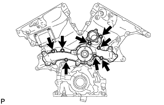
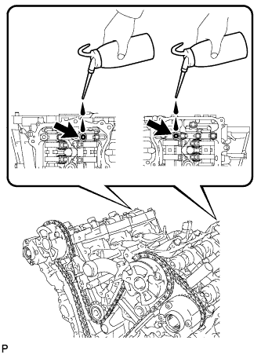
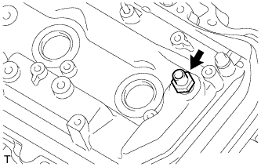

БЛОК ДВИГАТЕЛЯ > ПОВТОРНАЯ СБОРКА |
| 1. УСТАНОВИТЕ РЕЗЬБОВУЮ ШПИЛЬКУ |
Установите резьбовую шпильку масляного поддона.
С помощью торцевых ключей "TORX" E6 и E8 вверните 6 резьбовых шпилек, как показано на рисунке.
Вверните шпильку левой головки блока цилиндров.
С помощью торцевого ключа "TORX" E6 вверните резьбовую шпильку, как показано на рисунке.
| 2. УСТАНОВИТЕ СОЕДИНИТЕЛЬНОЕ КОЛЬЦО |
Используя молоток с пластмассовым покрытием, вбейте новые соединительные кольца в кожух распредвала.
| *A | Левая сторона | *B | Правая сторона |
| *1 | Высота выступания | - | - |
| 3. УСТАНОВИТЕ СТОПОРНЫЙ ШТИФТ |
Используя молоток с пластмассовым покрытием, вбейте новые стопорные штифты в кожух распредвала.
| Параметр / Устройство | Заданные условия |
| Соединительное кольцо A | 7,7 - 8,3 мм (0,303 - 0,327 дюйма) |
| Соединительное кольцо B | 5,7 - 6,3 мм (0,224 - 0,248 дюйма) |
| *A | Левая сторона | *B | Правая сторона |
| *1 | Высота выступания | - | - |
| 4. УСТАНОВИТЕ ЗАДНИЙ САЛЬНИК КОЛЕНЧАТОГО ВАЛА |
При помощи SST и молотка запрессуйте новый сальник так, чтобы его поверхность была заподлицо с краем стопора заднего сальника.
Нанесите универсальную консистентную смазку на кромку сальника.
| 5. УСТАНОВИТЕ СТОПОР ЗАДНЕГО САЛЬНИКА КОЛЕНЧАТОГО ВАЛА |
Удалите остатки старого герметика (FIPG). Следите, чтобы масло не попало на сопрягающиеся поверхности стопора сальника и блока цилиндров.
Нанесите герметик в виде сплошного валика, как показано на рисунке.
| *1 | Герметик |
Закрепить крышку заднего сальника 5 болтами и 2 гайками.
| 6. УСТАНОВИТЕ РАСПОРНУЮ ДЕТАЛЬ ВОДЯНОЙ РУБАШКИ БЛОКА ЦИЛИНДРОВ |
Установите 2 распорных детали водяной рубашки, как показано на рисунке.
| *1 | метка UP |
| *2 | Метка L |
| *3 | Метка R |
| 7. УСТАНОВИТЕ ДАТЧИК ДЕТОНАЦИИ |
 |
Установите 2 датчика и закрепите их 2 болтами, как показано на рисунке.
| *A | для ряда 2 |
| *B | для ряда 1 |
| *a | Двигатель Задние |
| *b | Верх |
| *c | Передняя сторона двигателя |
Подсоедините 2 разъема датчиков.
| 8. УСТАНОВИТЕ ВОДООТВОДЯЩУЮ ТРУБКУ № 1 |
Установите отводящую трубку системы охлаждения и закрепите ее 2 гайками и болтом.
Установите 3 зажима жгута проводов.
| 9. УСТАНОВИТЕ ПРОКЛАДКУ ГОЛОВКИ БЛОКА ЦИЛИНДРОВ |
Удалите остатки старого герметика (FIPG). Следите, чтобы масло не попало на сопрягающиеся поверхности головки блока цилиндров и блока цилиндров.
Нанесите герметик на новую прокладку головки блока цилиндров, как показано на рисунке.
| А | 10 - 15 мм (0,394 - 0,591 дюйма) |
| B | 1,25 - 1,5 мм (0,0492 - 0,0591 дюйма) |
| *1 | Герметик |
| *2 | Прокладка |
 |
Прокладку головки блока цилиндров установите на поверхность блока цилиндров штампом "Lot No." (Номер партии) вверх.
| *1 | Номер партии |
 | Передняя часть двигателя |
| 10. УСТАНОВИТЕ ГОЛОВКУ БЛОКА ЦИЛИНДРОВ В СБОРЕ |
Установите головку блока цилиндров на блок цилиндров.
Нанесите тонкий слой моторного масла на резьбы и под головки болтов головки блока цилиндров.
Шаг 1:
 |
С помощью 12-гранного гаечного ключа на 10 мм вверните, предварительно подложив плоские шайбы, и в несколько приемов равномерно затяните 8 болтов головки блока цилиндров в последовательности, показанной на рисунке.
Шаг 2:
Отметьте краской переднюю сторону головки каждого болта крепления головки блока цилиндров.
Затяните болты головок блока цилиндров, повернув их еще на 90°.
Шаг 3:
Затяните болты головок блока цилиндров, повернув их еще на 90°.
Убедитесь, что все метки, нанесенные краской, располагаются под углом 180° к внешней стороне.
| 11. УСТАНОВИТЕ ПРОКЛАДКУ ГОЛОВКИ БЛОКА ЦИЛИНДРОВ № 2 |
Удалите остатки старого герметика (FIPG). Следите, чтобы масло не попало на сопрягающиеся поверхности головки блока цилиндров и блока цилиндров.
 |
Нанесите герметик на новую прокладку головки блока цилиндров, как показано на рисунке.
| А | 10 - 15 мм (0,394 - 0,591 дюйма) |
| B | 1,25 - 1,5 мм (0,0492 - 0,0591 дюйма) |
| *1 | Герметик |
| *2 | Прокладка |
Прокладку головки блока цилиндров установите на поверхность блока цилиндров штампом "Lot No." (Номер партии) вверх.
| *1 | Номер партии |
| Передняя часть двигателя |
| 12. УСТАНОВИТЕ ЛЕВУЮ ГОЛОВКУ БЛОКА ЦИЛИНДРОВ |
Установите головку блока цилиндров на блок цилиндров.
Нанесите тонкий слой моторного масла на резьбы и под головки болтов головки блока цилиндров.
Шаг 1:
 |
С помощью 12-гранного гаечного ключа на 10 мм вверните, предварительно подложив плоские шайбы, и в несколько приемов равномерно затяните 8 болтов головки блока цилиндров в последовательности, показанной на рисунке.
Шаг 2:
Отметьте краской переднюю сторону головки каждого болта крепления головки блока цилиндров.
Затяните болты головок блока цилиндров, повернув их еще на 90°.
Шаг 3:
Затяните болты головок блока цилиндров, повернув их еще на 90°.
Убедитесь, что все метки, нанесенные краской, располагаются под углом 180° к внешней стороне.
 |
Затяните 2 болта в порядке, указанном на рисунке.
| 13. УСТАНОВИТЕ КОЛПАК ШТОКА КЛАПАНА |
Нанесите тонкий слой моторного масла на колпаки штоков клапанов.
Установите 24 колпака штоков клапанов на головку блока цилиндров.
| 14. УСТАНОВИТЕ МЕХАНИЗМ РЕГУЛИРОВКИ ЗАЗОРА В ПРИВОДЕ КЛАПАНА В СБОРЕ |
Проверьте механизм регулировки зазора (Нажмите здесь).
Снимите 24 механизма регулировки зазора в приводе клапана с головки блока цилиндров.
| 15. УСТАНОВИТЕ РЫЧАГ ПРИВОДА КЛАПАНА № 1 В СБОРЕ |
Нанесите слой моторного масла на торец механизма регулировки зазора и торец колпака штока клапана.
 |
Установите 24 рычагов приводов клапанов, как показано на рисунке.
| *1 | Рычаг привода клапана |
| *2 | Механизм регулировки зазора в приводе клапана |
| *3 | Шток клапана |
| *4 | Колпак штока клапана |
| 16. УСТАНОВИТЕ КРЫШКУ ПОДШИПНИКА РАСПРЕДВАЛА (для ряда 2) |
Нанесите тонкий слой моторного масла на шейки распредвала, крышки подшипника и кожуха распредвала.
Установите распредвал № 3 и распредвал № 4 в кожух распредвала.
Проверьте метки и номера на крышках подшипников распредвала и установите их в правильное положение и в нужном направлении.
 |
Временно затяните 8 болтов в порядке, указанном на рисунке.
| 17. УСТАНОВИТЕ ЛЕВЫЙ КОЖУХ РАСПРЕДВАЛА В СБОРЕ |
|
Проверьте, чтобы рычаг привода клапана был установлен, как показано на рисунке.
| *1 | Рычаг привода клапана |
| *2 | Механизм регулировки зазора в приводе клапана |
| *3 | Шток клапана |
| *4 | Колпак штока клапана |
 |
Нанесите герметик в виде сплошного валика, как показано на рисунке.
| *1 | Герметик |
 |
Установите левый кожух распредвала и затяните 13 болтов в порядке, показанном на рисунке.
| *1 | Штифт |
| *a | Вид спереди |
 |
Затяните 8 болтов в порядке, указанном на рисунке.
| 18. УСТАНОВИТЕ КРЫШКУ ПОДШИПНИКА РАСПРЕДВАЛА (для ряда 1) |
Нанесите тонкий слой моторного масла на шейки распредвала, крышки подшипника и кожуха распредвала.
Установите распредвал и распредвал № 2 в кожух распредвала.
Проверьте метки и номера на крышках подшипников распредвала и установите их в правильное положение и в нужном направлении.
Временно вверните 8 болтов крышек подшипников в порядке, указанном на рисунке.
| 19. УСТАНОВИТЕ ПРАВЫЙ КОЖУХ РАСПРЕДВАЛА В СБОРЕ |
|
Проверьте, чтобы коромысло привода клапана № 1 было установлено, как показано на рисунке.
| *1 | Рычаг привода клапана |
| *2 | Механизм регулировки зазора в приводе клапана |
| *3 | Шток клапана |
| *4 | Колпак штока клапана |
Нанесите герметик в виде сплошного валика, как показано на рисунке.
| *1 | Герметик |
 |
Установите правый кожух распредвала и затяните 12 болтов в порядке, показанном на рисунке.
| *1 | Штифт |
| *a | Вид спереди |
Затяните 8 болтов в порядке, указанном на рисунке.
| 20. УСТАНОВИТЕ НАТЯЖИТЕЛЬ ЦЕПИ № 3 В СБОРЕ (для ряда 2) |
 |
Установите натяжитель цепи № 3 и закрепите его болтом.
Нажав на натяжитель цепи, зафиксируйте его, вставив в отверстие штифт диаметром 1,0 мм (0,0394 дюйма).
| *1 | Штифт |
| *2 | Плунжер |
| *a | Нажмите |
| 21. УСТАНОВИТЕ ЗУБЧАТЫЕ КОЛЕСА РАСПРЕДВАЛА И ЦЕПЬ № 2 (для ряда 2) |
 |
Совместите маркированные пластины (желтые) с синхронизирующими метками на зубчатых колесах распредвала, как показано на рисунке.
| *1 | Установочная метка |
| *2 | Пластина с меткой |
Нанесите тонкий слой моторного масла на резьбы и места посадки болтов.
Совместите установочный штифт распредвала с отверстием под штифт в зубчатом колесе распредвала. Установите зубчатое колесо распредвала и левую шестерню распредвала выпускных клапанов с предварительно надетой цепью № 2.
 |
Удерживая с помощью SST шестигранный участок каждого распредвала, затяните болты зубчатого колеса распредвала и зубчатого колеса распредвала выпускных клапанов.
| *a | Поверните |
| *b | Удерживайте |
Извлеките штифт из натяжителя цепи № 3 в сборе.
| 22. УСТАНОВИТЕ НАТЯЖИТЕЛЬ ЦЕПИ № 2 В СБОРЕ (для ряда 1) |
 |
Установите натяжитель цепи № 2 и закрепите его болтом.
Нажав на натяжитель цепи № 2 в сборе, зафиксируйте его, вставив в отверстие штифт диаметром 1,0 мм (0,0394 дюйма).
| *1 | Штифт |
| *2 | Плунжер |
| *a | Нажмите |
| 23. УСТАНОВИТЕ ЗУБЧАТЫЕ КОЛЕСА РАСПРЕДВАЛА И ЦЕПЬ № 2 (для ряда 1) |
 |
Совместите маркированные пластины (желтые) с синхронизирующими метками на зубчатых колесах распредвала, как показано на рисунке.
| *1 | Установочная метка |
| *2 | Пластина с меткой |
Нанесите тонкий слой моторного масла на резьбы и места посадки болтов.
Совместите установочный штифт распредвала с отверстием под штифт в зубчатом колесе распредвала. Установите зубчатое колесо распредвала и шестерню распредвала выпускных клапанов с предварительно надетой цепью № 2.
 |
Удерживая с помощью SST шестигранный участок каждого распредвала, затяните болты зубчатого колеса распредвала и зубчатого колеса распредвала выпускных клапанов.
| *a | Поверните |
| *b | Удерживайте |
Извлеките штифт из натяжителя цепи № 2 в сборе.
| 24. УСТАНОВИТЕ УСПОКОИТЕЛЬ ЦЕПИ № 1 |
 |
Установите успокоитель цепи № 1 и закрепите его 2 болтами.
| 25. УСТАНОВИТЕ УСПОКОИТЕЛЬ ЦЕПИ № 2 |
 |
Установите 2 успокоителя цепи № 2.
| 26. УСТАНОВИТЕ ВЕДУЩУЮ ЗВЕЗДОЧКУ ЦЕПИ ГРМ НА КОЛЕНЧАТОМ ВАЛУ |
 |
Совместите шпоночную канавку ведущей звездочки с установочной шпонкой ведущей звездочки.
Установите ведущую звездочку на коленчатый вал таким образом, чтобы она была направлена внутрь, как показано на рисунке.
| *a | Внутрь |
| 27. УСТАНОВИТЕ ВАЛ ПРОМЕЖУТОЧНОЙ ШЕСТЕРНИ № 1 |
Нанесите тонкий слой моторного масла на поверхность трения вала промежуточной шестерни № 1.
 |
Установите, не закрепляя, вал промежуточной шестерни № 1 и промежуточную шестерню № 1 с валом промежуточной шестерни № 2, совместив установочный штифт вала промежуточной шестерни № 1 с канавкой в блоке цилиндров.
| *1 | Штифт |
Шестигранным ключом на 10 мм затяните ось промежуточной шестерни № 2.
Извлечь штифт из натяжителя цепи.
| 28. УСТАНОВИТЕ ЦЕПЬ № 1 В СБОРЕ |
Совместите пластину с меткой с синхронизирующими метками, как показано на рисунке, и установите цепь.
| *1 | Пластина с меткой |
| *2 | Установочная метка |
 |
Не надевайте цепь на коленчатый вал, а просто на время положите ее на него.
Вращая зубчатое колесо распредвала в ряду 1 против часовой стрелки, натяните цепь между рядами.
| *1 | Пластина звена цепи |
| *a | При повторном использовании промежуточной цепной шестерни |
| *b | Метка |
| *c | Совместите |
| Поверните |
 |
Совместите пластину с меткой с установочными метками, как показано на рисунке, и установите цепь на ведущую звездочку коленчатого вала.
| *1 | Пластина с меткой |
| *2 | Установочная метка |
Временно вверните установочный болт шкива.
 |
Поверните коленчатый вал по часовой стрелке, чтобы совместить его с осевой линией отверстия правого блока (ВМТ такта сжатия).
| *1 | Центральная линия |
| *2 | Установочная метка |
| *3 | Пластина датчика |
| 29. УСТАНОВИТЕ БАШМАК НАТЯЖИТЕЛЯ ЦЕПИ |
 |
Установите башмак натяжителя цепи.
| 30. УСТАНОВИТЕ НАТЯЖИТЕЛЬ ЦЕПИ № 1 В СБОРЕ |
 |
Повернув стопорную пластину натяжителя по часовой стрелке, нажмите на плунжер натяжителя цепи, как показано на рисунке.
| *1 | Стопорная пластина |
| *a | Нажмите |
Повернув стопорную пластину натяжителя против часовой стрелки, вставьте в отверстия стопорной пластины и натяжителя штифт диаметром 1,27 мм (0,0500 дюйма), чтобы зафиксировать стопорную пластину.
 |
Установите натяжитель цепи и закрепите его 2 болтами.
Извлеките штифт из натяжителя цепи № 1.
| 31. ПРОВЕРЬТЕ ФАЗЫ ГАЗОРАСПРЕДЕЛЕНИЯ |
Проверьте установочные метки распредвала.
Убедитесь, что все установочные метки распредвала расположены, как показано на рисунке.

| *1 | Установочная метка | - | - |
| *a | Точка обзора | - | - |
Если фазы газораспределения смещены, установите цепной привод газораспределительного механизма заново.
Выверните установочный болт шкива.
| 32. УСТАНОВИТЕ ПЕРЕДНИЙ САЛЬНИК КОЛЕНЧАТОГО ВАЛА |
 |
При помощи SST и молотка запрессуйте новый сальник так, чтобы его поверхность была заподлицо с краем крышки цепного привода газораспределительного механизма.
| 33. УСТАНОВИТЕ НАСОС СИСТЕМЫ ОХЛАЖДЕНИЯ В СБОРЕ |
|  |
Установите новую прокладку и закрепите насос системы охлаждения 8 болтами.
| 34. УСТАНОВИТЕ КРЫШКУ ЦЕПНОГО ПРИВОДА ГАЗОРАСПРЕДЕЛИТЕЛЬНОГО МЕХАНИЗМА В СБОРЕ |
Удалите остатки старого герметика (FIPG). Следите за тем, чтобы масло не попало на сопрягающиеся поверхности крышки цепного привода газораспределительного механизма и блока цилиндров.

| *A | Со стороны головки блока цилиндров и блока цилиндров | *B | Со стороны крышки цепного привода газораспределительного механизма |
| *a | Очистите и обезжирьте | - | - |
Нанесите на новую прокладку масляного насоса тонкий слой моторного масла.
Установите прокладку масляного насоса.
Нанесите герметик, как показано на рисунке.
| *1 | Диаметр уплотнения |
| Герметик |
Нанесите герметик в виде сплошного валика на крышку цепного привода газораспределительного механизма, как показано на рисунке.

| *a | Обязательно нанесите герметик | *b | Зона, отмеченная пунктирной линией (герметик: Фирменный герметик Seal Packing Black от компании Тойота, Three bond 1207B или аналогичный) |
| *c | Зона, отмеченная непрерывной линией (герметик: Фирменный герметик Seal Packing Black от компании Тойота, Three bond 1207B или аналогичный) | *d | Зона, отмеченная штрих-пунктирной линией (герметик: Фирменный герметик Seal Packing 1282B от компании Тойота, Three bond 1282B или аналогичный) |
| *e | Зона, отмеченная заштрихованной линией (герметик: Фирменный герметик Seal Packing Black от компании Тойота, Three bond 1207B или аналогичный) | - | - |
| Область | Диаметр валика герметика | Участки нанесения герметика с внутренней стороны |
| Зона, отмеченная непрерывной линией | не менее 4,5 мм (0,177 дюйма) | 3,0-4,0 мм (0,118-0,158 дюйма) |
| Зона, отмеченная штрих-пунктирной линией | Не менее 3,5 мм (0,138 дюйма) | 2,0 - 3,0 мм (0,0787 - 0,118 дюйма) |
| Зона, отмеченная пунктирной линией | Не менее 3,5 мм (0,138 дюйма) | 3,0 - 4,0 мм (0,118 - 0,158 дюйма) |
| Область, показанная штриховкой | не менее 6,0 мм (0,236 дюйма) | 5,0 мм (0,197 дюйма) |
 |
Совместите шлицы ведущей шестерни масляного насоса и коленчатого вала, как показано на рисунке. Установите на ведущую шестерню и крышку цепного привода на коленчатый вал.
| *1 | Шлицы ведущей шестерни |
| *2 | Коленчатый вал |
Закрепите крышку цепного привода газораспределительного механизма 26 болтами, обозначенными A, B, C и D, и 2 гайками. Равномерно затяните болты и гайки в несколько приемов.
| Параметр / Устройство | Длина |
| болт A | 25 мм (0,984 дюйма) |
| Болт B | 55 мм (2,17 дюйма) |
| Болт C | 35 мм (1,38 дюйма) |
| Болт D | 65 мм (2,56 дюйма) |
| *1 | Гайка | - | - |
| *a | Зона 1 | *b | Зона 2 |
| *c | Зона 3 | *d | Зона 4 |
Затяните болты в зоне 1.
Затяните болты в зоне 2.
Затяните болты в зоне 3.
Затяните болты в зоне 4.
| 35. УСТАНОВИТЕ ОТРАЖАТЕЛЬ МАСЛЯНОГО ПОДДОНА № 1 |
 |
Закрепите отражатель масляного поддона № 1 6 болтами.
| 36. УСТАНОВИТЕ ПОДДОН КАРТЕРА В СБОРЕ |
Удалите остатки старого герметика (FIPG). Следите, чтобы масло не попало на сопряженные поверхности блока цилиндров, крышки заднего сальника и поддона картера.
Установите в крышку цепного привода газораспределительного механизма 3 новых кольцевых уплотнения.
 |
Нанесите герметик в виде сплошного валика, как показано на рисунке.
| *1 | Герметик |
 |
Установите поддон картера и закрепите его 17 болтами (A, B, C, D и E) и 2 гайками. Равномерно затяните болты и гайки в несколько приемов.
| Параметр / Устройство | Длина |
| Болт A | 60 мм (2,36 дюйма) |
| Болт B | 45 мм (1,77 дюйма) |
| Болт C | 25 мм (0,984 дюйма) |
| Болт D | 16 мм (0,630 дюйма) |
| Болт E | 70 мм (2,76 дюйма) |
| *1 | Гайка |
| 37. УСТАНОВИТЕ МАСЛОПРИЕМНИК С СЕТЧАТЫМ ФИЛЬТРОМ В СБОРЕ |
Установите новую прокладку и закрепите сетчатый фильтр 2 гайками.
| 38. УСТАНОВИТЕ ПОДДОН КАРТЕРА № 2 В СБОРЕ |
 |
Нанесите герметик в виде сплошного валика, как показано на рисунке.
| *1 | Герметик |
Установите масляный поддон № 2 и закрепите его 10 болтами и 2 гайками. Равномерно затяните болты и гайки в несколько приемов.
| Болт |
 | Гайка |
| 39. УСТАНОВИТЕ ПРОБКУ СЛИВНОГО ОТВЕРСТИЯ МАСЛЯНОГО ПОДДОНА |
Установите новую прокладку и пробку сливного отверстия.
| 40. УСТАНОВИТЕ ДАТЧИК УРОВНЯ МОТОРНОГО МАСЛА (для моделей с подогревателем) |
Установите новую прокладку на датчик уровня моторного масла.
Установите датчик и закрепите его 4 болтами.
Подсоедините разъем.
| 41. ЗАЛЕЙТЕ МОТОРНОЕ МАСЛО |
|  |
| 42. УСТАНОВИТЕ ПРОКЛАДКУ ТРУБКИ СВЕЧНОГО КОЛОДЦА |
Резцом срежьте уплотнительную часть снятой прокладки.
 | Удаляемая часть |
С помощью снятой прокладки и молотка до упора запрессуйте новую прокладку.
| *1 | Снятая прокладка |
| *2 | Новая прокладка |
Нанесите тонкий слой консистентной смазки на кромку прокладки.
Верните захваты отражающей вентиляционной заслонки в первоначальные положения.
| 43. УСТАНОВИТЕ КРЫШКУ ГОЛОВКИ БЛОКА ЦИЛИНДРОВ В СБОРЕ |
Удалите остатки старого герметика (FIPG). Следите за тем, чтобы масло не попало на сопрягающиеся поверхности головки блока цилиндров, крышки цепного привода газораспределительного механизма и крышки головки блока цилиндров.
Нанесите герметик, как показано на рисунке.
| Герметик |
 |
Установите 3 новые прокладки, как показано на рисунке.
Установите на крышку головки блока цилиндров новую прокладку.
Установить на болты уплотнительные шайбы.
Временно закрепите крышку головки блока цилиндров 12 болтами. Равномерно затяните болты в несколько приемов.
| Параметр / Устройство | Длина |
| А | 25 мм (0,984 дюйма) |
| B | 35 мм (1,38 дюйма) |
| C | 65 мм (2,56 дюйма) |
| D | 60 мм (2,36 дюйма) |
| Болт A |
| болт B |
 | болт C |
| болт D |
| 44. УСТАНОВИТЕ ЛЕВУЮ КРЫШКУ ГОЛОВКИ БЛОКА ЦИЛИНДРОВ В СБОРЕ |
Удалите остатки старого герметика (FIPG). Следите за тем, чтобы масло не попало на сопрягающиеся поверхности головки блока цилиндров, крышки цепного привода газораспределительного механизма и крышки головки блока цилиндров.
 |
Нанесите герметик, как показано на рисунке.
| Герметик |
 |
Установите 3 новые прокладки, как показано на рисунке.
Установите на крышку головки блока цилиндров новую прокладку.
Установить на болты уплотнительные шайбы.
Временно закрепите крышку головки блока цилиндров 12 болтами. Равномерно затяните болты в несколько приемов.
| Параметр / Устройство | Длина |
| А | 25 мм (0,984 дюйма) |
| B | 35 мм (1,38 дюйма) |
| C | 70 мм (2,76 дюйма) |
| D | 60 мм (2,36 дюйма) |
| Болт A |
| Болт B |
| болт C |
| Болт D |
| 45. УСТАНОВИТЕ ШКИВ КОЛЕНЧАТОГО ВАЛА |
 |
Используя SST, установите шкив коленчатого вала и закрепите его установочным болтом шкива.
| 46. УСТАНОВИТЕ КЛАПАН ПРИНУДИТЕЛЬНОЙ ВЕНТИЛЯЦИИ КАРТЕРА В СБОРЕ |
|  |
Нанесите герметик на 2-3 витка резьбы клапана принудительной вентиляции картера.
Установите клапан принудительной вентиляции картера.
Установите шланг клапана принудительной вентиляции картера.
| 47. УСТАНОВИТЕ СВЕЧУ ЗАЖИГАНИЯ |
Установите 6 свечей зажигания.
| 48. УСТАНОВИТЕ ЗАДНИЙ СОЕДИНИТЕЛЬ ПЕРЕПУСКА ОХЛАЖДАЮЩЕЙ ЖИДКОСТИ |
Смочите мыльным раствором новое кольцевое уплотнение и установите его на выпускной патрубок охлаждающей жидкости. Установите 2 новых прокладки на левый и правый каналы подачи охлаждающей жидкости.
| *1 | Новое кольцевое уплотнение |
| *2 | Новая прокладка |
 |
Установите задний соединитель перепуска охлаждающей жидкости и закрепите его 2 болтами и 4 гайками.
| 49. УСТАНОВИТЕ КОЖУХ ВПУСКНОГО ПАТРУБКА ОХЛАЖДАЮЩЕЙ ЖИДКОСТИ |
Подсоедините 3 перепускных шланга охлаждающей жидкости.
Смочите мыльным раствором новое кольцевое уплотнение и установите его на отводящую трубку системы охлаждения.
Установите на выпускной патрубок охлаждающей жидкости новое кольцевое уплотнение.
Установите на насос системы охлаждения новую прокладку.
Установите впускной патрубок охлаждающей жидкости и закрепите его 5 болтами.
Подсоедините 3 перепускных шланга охлаждающей жидкости.
| 50. УСТАНОВИТЕ КРОНШТЕЙН МАСЛЯНОГО ФИЛЬТРА |
Установите кронштейн масляного фильтра с новой прокладкой и закрепите его 2 гайками и болтом.
| 51. УСТАНОВИТЕ ФИЛЬТРУЮЩИЙ ЭЛЕМЕНТ МАСЛЯНОГО ФИЛЬТРА |
Очистите внутреннюю поверхность крышки масляного фильтра, резьбы и канавку для кольцевого уплотнения.
Нанесите небольшое количество моторного масла на новое уплотнительное кольцо и установите его на крышку масляного фильтра.
Установите новый фильтрующий элемент на крышку масляного фильтра.
Удалите грязь и посторонние материалы с установочной поверхности на двигателе.
Снова нанесите небольшое количество моторного масла на уплотнительное кольцо и временно установите крышку масляного фильтра.
 |
Затяните крышку масляного фильтра с помощью SST.
| *1 | Фиксатор кронштейна масляного фильтра |
| *a | Отсутствие зазора |
Нанесите небольшое количество моторного масла на новое кольцевое уплотнение пробки сливного отверстия и установите его на крышку масляного фильтра.
| *1 | Кольцевое уплотнение |
Установите пробку сливного отверстия масляного фильтра.
| 52. УСТАНОВИТЕ МАСЛОПРОВОД № 2 |
Убедитесь в отсутствии посторонних частиц на сетке правого фильтра гидравлического клапана изменения фаз.
Установите новую прокладку, временно установите маслопровод (со стороны головки цилиндров) и вверните болт обратного масляного клапана.
Установите правый фильтр гидравлического клапана изменения фаз на штуцер маслопровода. Установите новые прокладки и временно установите маслопровод (со стороны крышки головки).
Затяните штуцер маслопровода (со стороны головки блока цилиндров).
Затяните штуцер маслопровода (со стороны крышки головки цилиндров).
| 53. УСТАНОВИТЕ МАСЛОПРОВОД № 1 |
Убедитесь в отсутствии посторонних частиц на сетке левого фильтра гидравлического клапана изменения фаз.
Установите новую прокладку, временно установите маслопровод (со стороны головки цилиндров) и вверните болт обратного масляного клапана.
Установите левый фильтр гидравлического клапана изменения фаз на штуцер маслопровода. Установите новые прокладки и временно установите маслопровод (со стороны крышки головки).
Затяните штуцер маслопровода (со стороны головки блока цилиндров).
Затяните штуцер маслопровода (со стороны крышки головки цилиндров).
| 54. УСТАНОВИТЕ КОРПУС КРЫШКИ МАСЛОНАЛИВНОЙ ГОРЛОВИНЫ |
Закрепите новую прокладку и корпус крышки маслоналивной горловины 2 гайками.
| *1 | Новая прокладка |
Установите крышку маслоналивной горловины.
| 55. УСТАНОВИТЕ ГИДРАВЛИЧЕСКИЙ КЛАПАН ИЗМЕНЕНИЯ ФАЗ В СБОРЕ |
Правая сторона:
Нанесите тонкий слой моторного масла на 2 новых кольцевых уплотнения.
Установите 2 кольцевых уплотнения на 2 гидравлических клапана изменения фаз.
Установите 2 гидравлических клапана измерения фаз и закрепите их 2 болтами.
 |
Левая сторона:
Нанесите тонкий слой моторного масла на 2 новых кольцевых уплотнения.
Установите 2 кольцевых уплотнения на 2 гидравлических клапана изменения фаз.
Установите 2 гидравлических клапана измерения фаз и закрепите их 2 болтами.
| 56. УСТАНОВИТЕ ДАТЧИК ПОЛОЖЕНИЯ КОЛЕНЧАТОГО ВАЛА |
Установите датчик и закрепите его болтом.
| 57. УСТАНОВИТЕ ДАТЧИК ПОЛОЖЕНИЯ РАСПРЕДВАЛА |
 |
Правая сторона:
Закрепите 2 датчика положения распредвала 2 болтами.
 |
Левая сторона:
Закрепите 2 датчика положения распредвала 2 болтами.
| 58. УСТАНОВИТЕ КРАН ДЛЯ СЛИВА ОХЛАЖДАЮЩЕЙ ЖИДКОСТИ ИЗ БЛОКА ЦИЛИНДРОВ |
Нанесите герметик на два или три витка резьбы крана.
Установите сливной кран.
| *A | Левая сторона |
| *B | Правая сторона |
| *a | Передняя сторона |
Поверните сливной кран по часовой стрелке в положение, показанное на рисунке.
Установите пробки на краны для слива охлаждающей жидкости.
| 59. УСТАНОВИТЕ ДАТЧИК ТЕМПЕРАТУРЫ ОХЛАЖДАЮЩЕЙ ЖИДКОСТИ |
Установите на датчик новую прокладку.
С помощью удлиненной торцевой головки на 19 мм установите датчик.
| 60. УСТАНОВИТЕ КОНТАКТНЫЙ ДАТЧИК ДАВЛЕНИЯ МОТОРНОГО МАСЛА |
 |
С помощью удлиненной торцевой головки на 24 мм установите контактный датчик давления жидкости.